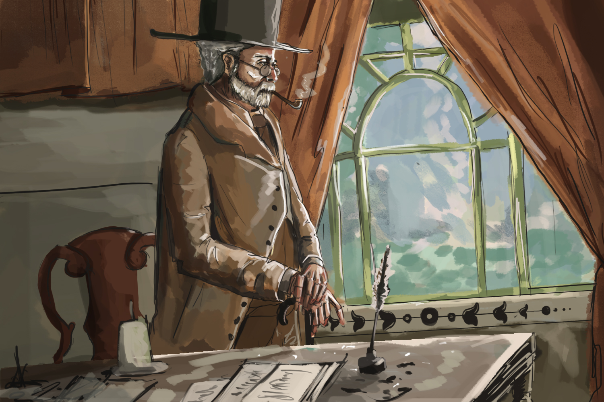

Le Fabuleux Voyage d' JULES & SIMONE
Este trabajo fue desarrollado en Modulo de Interfaces Gráficas en un trabajo colaborativo entre Diseño Gráfico e Ingenieria en Diseño de Entretenimiento Digital. Este trabajo se mostro como un prototipo de solución para una propuesta de la editorial de la UPB, quienes querían llegar a nuevos lectores. Utilizamos la Realidad Aumentada para mostrale a las personas ciertas partes de las historias basadas en los relatos de Julio Verne, pero lo innovador de la idea es vincular a la persona como el viajero de la historia, quien debe desplazarse a ciertos lugares señalados en el mapa para poder escanear con su aplicación los fragmentos del relato.
Puedes acceder a una descripción más completa del proyecto dando click aquí
PARTICIPANTES:
- Andrea González Moreno
- Luis Eduardo Bler
- Juan Camilo Rios
- Camilo Botero
- Juan Esteban Álvarez Mesa
ASESORES DEL CURSO:
- Sebastian Uribe
- David Londoño
- Juan Bustamante
- Esteban Gutierrez
SOBRE EL PROYECTO.
Para pegarle un pequeño vistazo a la aplicación que se desarrolló como una pequeña muestra de la idea puedes descargarla dando click aquí (Nota importante aún no se ha optimizado).
Para poder observar los videos dentro de la aplicación puedes escanear la siguiente imagen desde la aplicación.
{kind=link}